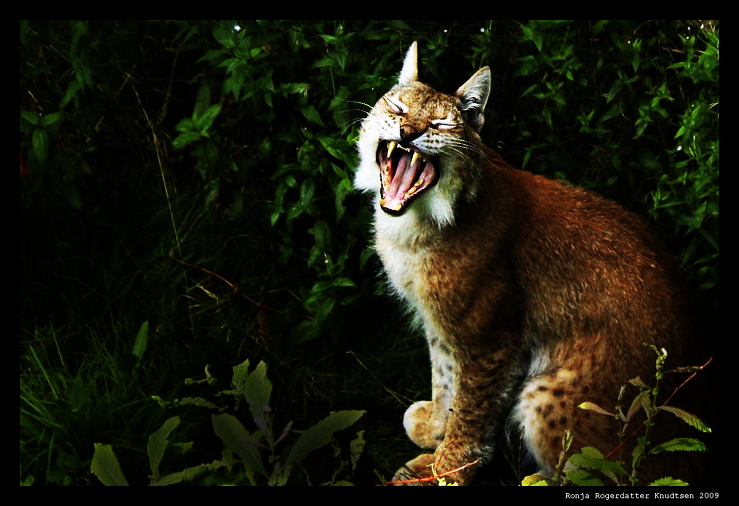
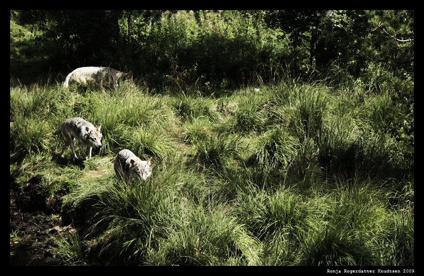

La gaupa i fred for i helvete!
Det er nå så få Gauper i Norge at vi risikerer at vårt aller vakreste og sannsynligvis mest sårbare rovdyr står i fare for å bli helt utryddet. Skulle det skje vil i alle fall jeg og mange med meg se på det som en stor katastrofe for norsk natur. Et annet og langt skumlere rovdyr, nemlig mennesker med gevær, er det derimot mer enn nok av ute i naturen. Et feigt og slu dyr som aldri i livet ville våge å møte verken gaupe, ulv eller bjørn mano a mano, til en kamp på like vilkår…

Nei, det menneskelige rovdyret ligger der i sin fabrikklagede kamuflasjedrakt, med sitt gevær med kikkertsikte, og dreper på lengst mulig avstand. For en triumf, for et vågestykke! Tenk for jegeren å få komme happy og skrytende hjem med det blodige gaupe- eller ulveliket/skinnet og virkelig være “stor kar”, naturligvis uansett kjønn.
Sjølsagt kan det være situasjoner der man må skade eller drepe, forsvare seg og sine mot rovdyr av alle arter1, men når det gjelder et truet dyr som gaupa skal man sannelig ha en skikkelig god og solid grunn. Oftest er stanken av mennesker nok til å få de fleste dyr til å rømme sin vei, så sjansen for å kunne se sånne dyr nær bebyggelse er forsvinnende liten.
I mine øyne burde forresten jakt uansett være unødvendig i vår fauna. Hvis det nå blir for mye av en art skyldes det vanligvis nettopp den skjevheten i naturen som menneskene skaper ved å forstyrre, nei ødelegge, balansen mellom dyreartene. Den kan da kun rettes opp ved å la rovdyrbestandene nå opp på et normalt nivå – og kanskje vel så det akkurat nå!

Antallet rovdyr over hele verden, inklusive Afrika – eller rettere sagt spesielt Afrika – nærmer seg en katastrofe. Snart vil løver, leoparder, geparder, tigre og altså også ulv og gaupe kun være å se i dyreparker. Og der antakelig bare i noen få generasjoner før innavl, sjukdom og så videre tar knekken også på dem. Da har vi i alle fall slik jeg ser det fått en langt, langt fattigere natur, en fattigere og tristere verden å leve i.
Og for sikkerhets skyld: Skulle jeg mot all formodning bli drept og spist av gaupe så sett absolutt ikke i gang noen hevnjakt for min del. Jeg ville faktisk sett på det som en både bra og nyttig slutt. Særlig dersom den gaupa hadde unger.
Fotnoter:
- Inklusive og sjølsagt aller oftest mot menneskerovdyr.